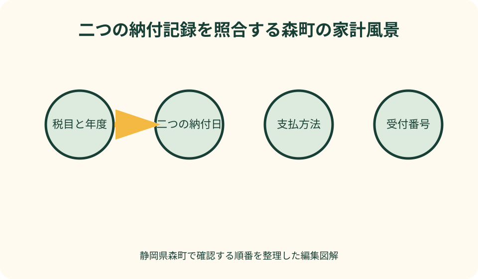
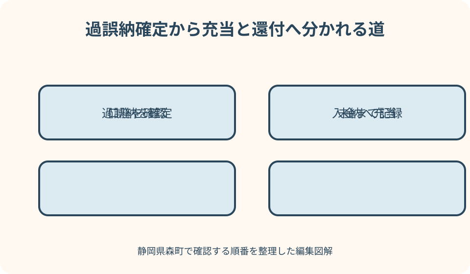

税金・納付｜最終確認 2026-08-10
静岡県森町で町税を納め過ぎたとき｜還付通知・充当・口座・受取時期
町税を二重に支払ったように見えても、すぐ同額が口座へ戻るとは限りません。森町が納付記録と税額を照合し、過誤納金が確定した後、未納の町税などへ充当するか、残額を還付するかが決まります。通知、充当、口座、振込時期を順に分けて確認します。
町税を納め過ぎたときの結論
町税の納め過ぎに気付いたとき、最初にするのは返金申請書を探すことではありません。同じ税目、年度、期別について複数の支払記録があるか、または税額変更後の決定額より既納額が多いかを整理し、森町税務課に収納状況を確認してもらいます。
地方税法には、地方税の過誤納金を還付する規定と、納付すべき地方団体の徴収金がある場合に充当する規定があります。そのため、過誤納が確定しても、必ず全額が指定口座へ振り込まれるとは限りません。未納分への充当後に残額があれば、還付という順になる場合があります。
通知書が届いたら、還付金額だけでなく、税目、年度、納税義務者、発生理由、充当額、差引還付額、口座手続の要否を読みます。表題が『還付』でも、本文に充当が記載されていれば、最終的に入金される金額は通知の内訳で判断します。
この記事の確認日は2026年8月10日です。静岡県森町が還付までの日数を一律に示す公式案内は確認できなかったため、他自治体の日数を森町へ当てはめません。通知発送日、口座情報の受付日、充当処理の有無を伝え、見込時期を個別に尋ねてください。
過納と誤納を見分ける
誤納の代表例は、同じ納付書を二度使った、納付書で払った後に口座振替も実行された、アプリの完了表示が分からず再度支払った、といった重複です。税額自体は正しくても、必要額より多く収納された状態を疑います。
過納は、いったん正しい税額として納めた後、申告内容の変更、更正、課税内容の見直しなどで決定税額が下がり、既納額が新しい税額を上回る場面です。固定資産税、個人町県民税、国民健康保険税など、税目により減額のきっかけと担当係が違います。
銀行口座の同額出金が二件あるだけでは、同一期別の二重納付と確定できません。町県民税と固定資産税、本人分と家族分、第一期と第二期など、偶然同額のことがあります。納付書番号、eL番号、税目、年度、期別まで照らします。
逆に、納付画面が二度表示されても、実際の決済は一回だけということもあり得ます。地方税お支払サイトは、複数の納付完了メールが届いた場合、納付履歴を確認し、心配ならeL番号と受付番号を添えて地方公共団体へ問い合わせるよう案内しています。
二重納付を疑った日の確認表
確認表の一列目には税目を書きます。個人町県民税・森林環境税、固定資産税・都市計画税、軽自動車税、国民健康保険税などです。『町税』だけでは収納記録を探しにくいため、納税通知書の正式名称を写します。
二列目は年度と期別です。支払日が同じ年でも、税の年度が異なることがあります。一括払いか期別払いかも記載し、同じ納付書を再利用したのか、別々の納付書だったのかを分けます。
三列目は支払方法と日時です。口座振替、金融機関窓口、コンビニ、スマートフォンアプリ、地方税お支払サイトなどを記録します。アプリ名、受付番号、完了メール、通帳の摘要があれば、個人番号など不要な情報を隠して準備します。
四列目は手元の証拠です。領収証書、アプリ履歴、カード明細、口座振替記録、納付書の控えを並べます。森町公式はスマホ納付では領収証書が発行されず、支払済みの納付書で再度納めないよう注意しています。電子履歴を削除しないでください。
還付通知は決定内容を読む書類
還付通知が届く前に『多く払ったから返るはず』と金額を家計へ組み込まないことが大切です。収納記録が町へ届くまでの時間、税額変更の確定、別の未納確認などがあるため、本人の計算と森町の決定が一致するとは限りません。
通知書では、宛名が納税義務者本人かを確認します。家族が実際に支払っていても、税の名義人へ通知されることがあります。固定資産税の共有名義、亡くなった人の税、法人町民税などは、受取人や口座名義の確認が増える可能性があります。
還付理由が『二重納付』なのか『税額変更』なのかも見ます。二重納付なら二回の収納日、税額変更なら変更通知の税額と既納額を照合します。理由が理解できないまま口座情報だけ返送せず、通知に記載された担当へ説明を求めます。
通知に返送期限や連絡期限がある場合は、その日付を封筒の到着日と分けて記録します。期限を過ぎたから権利が直ちになくなるとは自己判断せず、未提出の口座書類を発見した時点で税務課へ連絡し、現在必要な手続を確認してください。

還付と充当を分けて読む
還付は、確定した過誤納金を納税義務者へ返す処理です。充当は、その人が森町へ納付すべき町税や延滞金などがある場合、過誤納金をそちらへ充てる処理です。銀行口座へ一度振り込み、本人が未納分を払い直す順ではありません。
例えば過誤納金が三万円あり、充当対象が一万円なら、計算上の残額二万円が還付対象となる可能性があります。ただし、実際の対象税目、充当日、延滞金、還付加算金の有無は町の決定によります。例の数字を自分の通知へそのまま当てはめないでください。
未納の覚えがないのに充当通知があるときは、税目、年度、期別、納期限を確認します。家族分との混同、住所変更で届かなかった通知、口座振替不能、納付データの反映時差などを一つずつ切り分けます。充当通知を無視して同額を再納付すると、再び過誤納になるおそれがあります。
充当後の残額がゼロなら、還付通知に金額があっても口座入金がないことがあります。『通知が来たのに振り込まれない』と判断する前に、還付総額、充当額、差引額の三欄を読みます。分からないときは通知書番号を伝えて税務課へ確認します。
振込口座を安全に指定する
口座指定書が同封されていたら、金融機関名、支店、預金種別、口座番号、名義を通帳や銀行アプリの正式表示から転記します。屋号付き口座、家族名義、旧氏口座などは受取可否を決めつけず、納税義務者との関係を税務課へ伝えます。
口座振替で町税を納めていても、その口座へ必ず自動還付されるとは限りません。税目、納税義務者と口座名義の関係、過去の登録状況によって確認が必要になることがあります。通知に口座が印字されているか、返信が必要かを読みます。
亡くなった納税義務者、共有固定資産、法人、納税管理人が関わる場合は、単純な本人名義口座の指定と同じではありません。相続関係、代表者、受領権限を示す書類を求められる可能性があるため、自己流の委任状を先に作らず担当係へ必要様式を聞きます。
口座番号をメール本文や一般の問い合わせフォームへ送らないでください。町から届いた返信用封筒を使う場合も、宛先を森町公式ページの税務課所在地と照合します。窓口提出を選ぶなら、本人確認書類と通帳等のどの部分が必要かを事前に確認します。
受取時期を一律に予測しない
受取時期は、二回目の支払日だけでは決まりません。金融機関や決済事業者から収納データが届く日、過誤納の確定日、税額変更の処理日、未納確認、充当、口座情報の受付という複数の段階があります。
税額の減額を伴う場合は、申告書を出した日と町税額が変更された日も同じではありません。所得税の確定申告で還付が出る時期と、町県民税の変更後に生じる過納の処理時期も別です。国税の入金予定を町税へ流用しないでください。
森町の公式ページで一律の振込日数を確認できない以上、『通知から二週間』など他地域の目安を断定するのは不適切です。税務課へ、通知書番号、口座書類の提出日、充当の有無を伝え、処理がどの段階かを尋ねます。
問い合わせ日は、急ぎの理由も簡潔に伝えます。ただし生活費や契約支払の予定があることを伝えても、還付日が保証されるわけではありません。入金確認までは別資金で予定を組み、通帳記帳や銀行アプリで振込名義と金額を確認します。
支払方法ごとの記録を残す
金融機関や役場窓口で納めた場合は、領収日付印のある領収証書を保管します。納付書本体を再び支払える状態で持ち帰っても、領収済みの控えと一緒に保管し、未納の納付書と別の封筒へ分けます。
コンビニ納付では、レシートと領収証書を税目ごとに留めます。レシートだけでは年度や期別が分かりにくいことがあります。感熱紙は薄くなるため、必要な範囲を写真に残し、撮影日と納付書番号を家計表へ記録します。
スマホアプリは領収証書が発行されないので、アプリの取引履歴、支払完了日時、決済番号を保存します。森町公式は納付後の取消しや変更ができないと案内しています。二重に操作したと気付いても、アプリ側で自己取消しを試すより税務課へ収納確認を依頼します。
地方税お支払サイトでは、ログイン後の納付履歴、完了メール、eL番号、受付番号をそろえます。同サイトも、複数回納付の可能性がある場合は発行元の地方公共団体へ問い合わせるよう案内しています。カード会社への連絡だけで町税側の記録が消えるとは限りません。
税目による違いを見落とさない
個人町県民税の普通徴収は期別納付があり、給与や年金からの特別徴収とは収納経路が違います。退職後の切替、普通徴収納付書と給与天引きの時期が重なったように見えるときは、勤務先からの通知と森町の納付書を両方用意します。
固定資産税は納税義務者や共有名義、納税管理人が関わることがあります。森町公式は、納税管理人を通知受領、納税、還付金受領などを代行する人と説明しています。所有者本人が町外にいる場合、誰へ通知が届き、誰の口座で受けるかを資産税係へ確認します。
軽自動車税は四月一日時点の所有者へ課税され、年度途中の廃車や譲渡では月割還付がないと森町公式が案内しています。廃車したから必ず還付されると思わないでください。ただし同じ税を二重に納付した疑いは別なので、納付記録を町民税係へ確認します。
国民健康保険税は世帯単位の課税で、資格変更や年金からの特別徴収などが関係します。健康保険の脱退届を出した日と税額変更時期を混同せず、変更通知と既納額を比較します。保険料、後期高齢者医療保険料、介護保険料は担当が違う場合があるため、通知の名称を正確に伝えます。
所得税還付や給付金と混同しない
確定申告で所得税の還付が生じる場面は国税です。町県民税が後から変更され過納となることはありますが、所得税の還付額と町税の還付額は別計算です。税務署からの入金と森町からの通知を同じ家計欄へまとめないでください。
ふるさと納税のワンストップ特例も、現金で同額が返る制度ではありません。森町公式は、特例適用者には所得税の還付が発生せず、翌年度の個人住民税から控除されると案内しています。控除額の確認と過誤納金還付は別の記事・窓口で扱う内容です。
定額減税に伴う給付金、物価高騰対応の給付金、子育て手当も町税過誤納金ではありません。通知の担当課、制度名、対象者、振込名義が違います。『森町からお金が戻る』という共通点だけで口座書類を混ぜないようにします。
県税である自動車税の還付は静岡県の財務事務所が扱い、軽自動車税は市町村税です。車を手放した後の通知を見たときは、車種、課税主体、納税通知書の発行元を確認します。森町税務課へ県税の入金日を問い合わせても答えが出ない場合があります。
還付金詐欺を見分ける
還付金詐欺は、『今日中』『ATMへ行って』『操作番号を伝えて』などと急がせます。森町は給付金の注意喚起で、役場がATM操作を求めたり、支給のための手数料振込を求めたりしないと明記しています。税還付を名乗る連絡でも同じ危険信号として受け止めます。
電話の相手が森町役場を名乗っても、その場で口座番号、暗証番号、キャッシュカード番号を答えません。部署名、担当名、通知書番号を聞き、一度切ります。その後、自分で森町公式サイトを開き、税務課の掲載番号へかけ直します。
メールや短いメッセージのリンクから『還付口座登録』へ誘導された場合も開かないでください。森町はフィッシング対策の注意喚起で、不審なメールの添付やURLを不用意に開かず、必要に応じて役場担当へ問い合わせるよう案内しています。
本物の通知に見えても、返信先住所、町の名称、郵便番号、担当課、電話番号を公式ページと照合します。北海道の森町など同名自治体のページを検索で開くこともあるため、『静岡県周智郡森町森2101番地の1』かを確認します。不審なら書類を捨てず警察や町へ相談します。
良い点
過誤納金の仕組みの良い点は、必要額を超えて収納された地方税が確定したとき、地方税法に還付の規定があることです。納税者は二重納付に気付いた時点で証拠をそろえ、町へ収納状況を照会できます。
未納税への充当は、入金と再納付を二度行う手間を減らす面があります。充当額と残額が通知で明確なら、どの年度の未納が解消され、いくらが口座へ戻るのかを一枚で整理できます。
eL-QRやアプリによる納付では領収証書が出ない一方、受付番号や電子履歴を残せます。紙の納付書と電子履歴を組み合わせれば、二重操作の日時を比較しやすくなります。日ごろから履歴を保存する習慣が還付確認にも役立ちます。
通知を税目別、年度別に残すと、翌年の納付方法を見直す材料にもなります。口座振替中に納付書払いを重ねたのか、家族が別々に支払ったのか、アプリ表示を誤解したのかを振り返り、再発防止へつなげられます。
注文したい点
注文したい点は、納め過ぎに気付いてから通知や入金までの全体段階が、森町公式サイト上で一つの案内にまとまっていないことです。納税者には、収納確認中、過誤納確定、充当確認、口座確認、振込処理という現在地が見えにくくなります。
還付と充当の用語も初めての人には分かりにくいところです。通知の最上段に還付総額があると、下段の充当額を見落としやすくなります。差引振込額と、充当した税目・年度が目立つ配置だと誤解を減らせます。
キャッシュレス納付は便利ですが、領収証書が出ず、取消しができない点は不安を招きます。決済完了が遅れて見えると再操作しやすいため、完了表示が不明なときに待つ時間と確認先を納付画面で強く示してほしいところです。
受取時期も、個別処理だから一律日数を約束できないとしても、口座書類受付後にどの段階が残るかを案内できれば安心につながります。問い合わせる側も、通知番号と提出日を用意し、単に『いつ入るか』ではなく現在の処理段階を聞く必要があります。
代案・結論
領収証書をなくした場合は、支払をなかったことにせず、通帳、カード明細、アプリ履歴、完了メール、納付書番号から分かる範囲を集めます。森町側の収納記録と照合できる情報を税務課へ伝え、追加資料を確認します。
還付通知が届かない場合は、二重納付したと思う二つの日付、税目、年度、期別、支払方法を伝えて照会します。『いつ返るか』から聞くより、町側で二件の収納が確認できているか、過誤納として確定したかの順で聞きます。
口座を持たない、名義が一致しない、納税義務者が亡くなったなど通常の振込が難しい場合は、家族口座を勝手に記入しません。受領権限と必要書類、利用できる受取方法を担当係へ相談します。
結論として、還付を期待額で管理せず、①二件の納付証拠、②過誤納の確定、③充当内訳、④口座受付、⑤入金確認の五段階で記録します。どの段階かが分かれば、待つべきか、書類を追加すべきか、町へ再確認すべきかを判断できます。

家族で重複納付を防ぐ記録
家族で税を管理するときは、納付書を受け取る人と実際に払う人を決めます。支払後は納付書へ日付と方法を書き、アプリなら『電子納付済み』と大きく記します。未納付の束へ戻さないことが最も単純な防止策です。
口座振替を登録している税目には色を付け、納付書が届いてもすぐ払わない運用にします。納付書が届くことと、口座振替が設定されていないことは同じではありません。不明なら森町公式の納付案内や税務課で登録状況を確認します。
家計表には税目、年度、期別、納期限、支払日、方法、担当者、受付番号を一行で残します。夫婦や親子が別々の端末で払う場合は、決済前に共有表の未払い状態を確認するルールを決めます。
還付通知が来たら、通知書、口座指定書の写し、返送日、充当内訳、入金日を同じ行へ追加します。口座番号の全桁や暗証番号は共有表へ書かず、必要な人だけが原本を管理してください。
大石の視点
私は、町税の還付は臨時収入ではなく、家や土地の維持費を正しく戻す調整として扱うべきだと考えます。特に固定資産税は物件ごと、共有名義ごとに通知が分かれ、家族が別々に払うと重複に気付きにくくなります。
実家を相続した直後は、亡くなった所有者宛ての納付書、相続人代表者宛ての書類、共有者の支払が重なることがあります。納税義務者、対象物件、年度、期別を一枚にし、誰が支払うかを決めてから納付します。
還付先口座も、実際に支払った家族ではなく納税義務者との関係が問題になる場合があります。相続や共有が関係するなら、振込を急いで家族口座へ変えるより、受領権限と必要書類を資産税係へ確認する方が安全です。
まだ実家を売ると決めていなくても、固定資産税の通知、納付記録、還付・充当記録を物件台帳へ残してください。税の支払履歴は、保有費を家族で説明し、将来売る・貸す・住み続ける選択を比べる基礎になります。
税務課へ聞く五つの質問
一つ目は、『この税目・年度・期別について、二件の収納が確認されていますか』です。二件の支払日時と方法を伝えます。収納確認前なら、いつ再照会すればよいかを聞きます。
二つ目は、『過誤納金はいくらで、発生理由は何ですか』です。本人の計算との差があれば、元の税額、変更後の税額、既納額を順に説明してもらいます。
三つ目は、『未納税などへの充当はありますか。あるなら税目・年度・期別と差引残額は何ですか』です。充当があれば、同じ未納分を別途払わないよう家族へ共有します。
四つ目と五つ目は、『口座情報は受理されていますか』『現在の処理段階と見込時期はどこですか』です。振込日を保証してもらう質問ではなく、書類不足や名義不一致で止まっていないかを確かめる質問にします。
まとめ
町税の二重納付や減額後の納め過ぎを疑ったら、税目、年度、期別、二つの支払日、支払方法を整理します。領収証書がなくても、アプリ履歴、完了メール、eL番号、通帳から確認材料を集められます。
過誤納金が確定しても、未納町税などがあれば充当され、差引残額が還付される場合があります。通知の還付総額だけを見ず、充当額と最終振込額を分けて読みます。
口座情報は、通知の発行元と担当電話を森町公式で照合してから提出します。ATM操作、手数料振込、暗証番号の聞き取りを求める連絡には応じません。同名自治体のページを開いていないかも住所で確認してください。
受取時期は一律に断定できません。税務課へ通知番号、口座提出日、充当の有無を伝え、過誤納確定、口座確認、振込処理のどの段階かを聞きます。入金が確認できるまでは、還付予定額を支出へ充てない家計管理が安全です。
公式情報・確認先
掲載内容は次の一次情報を基礎に整理しました。営業、料金、催し、交通は変わるため、出発前または手続き前にリンク先で最新情報を確認してください。
- 納期限と納付方法（静岡県森町、2026-08-10確認）
- スマホアプリで町税が納付できます（静岡県森町、2026-08-10確認）
- 町税の滞納と延滞金（静岡県森町、2026-08-10確認）
- よくあるご質問〈固定資産税全般〉（静岡県森町、2026-08-10確認）
- 軽自動車税のよくある質問（静岡県森町、2026-08-10確認）
- 一つの納付書について納付完了メールが複数届いた場合（地方税共同機構・地方税お支払サイト、2026-08-10確認）
- 地方税法（過誤納金の還付・充当）（e-Gov法令検索、2026-08-10確認）
- 不審なメールや電話にご注意ください（国税庁、2026-08-10確認）